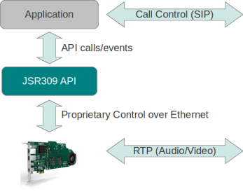
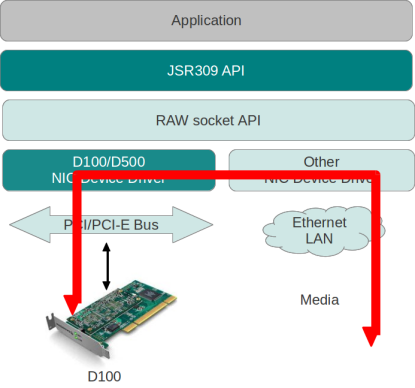
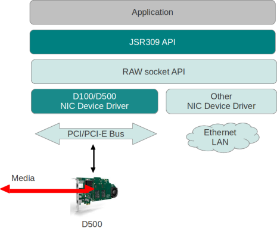
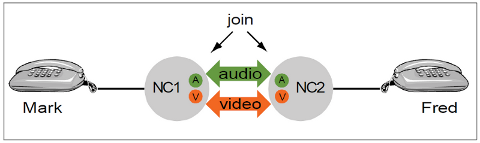
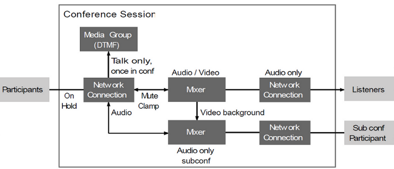

JSR309 API
1.0.0
The JSR309 API targets a large range of applications from a simple audio transcoding application to complex video conferencing application, by providing:
- media network connectivity to establish media streams
- IVR functions to detect DTMF, play file...
- ways to join and mix network connection to DTMF function to create conferences and call bridges
The API provides these services along with the Sangoma D-series cards. These cards have hardware accelerators that offloads the host processor(s). The API can use one or more Sangoma cards depending if the application requires less or more density.
The following figure shows a high level architecture of an application that uses the JSR309 API.

- Note:
- This API is inspired from the JSR309 API developped for Java. JSR309 is an API designed by Oracle and Hewlett-Packard to provide multimedia application developers with a generic Media Server abstraction interface. It defines both a programming model and an object model for MS control independent of MS control protocols. The Media Server Control API is not an API for a specific protocol. It uses the multiple and evolving MS capabilities available in the industry today to provide an abstraction for commonly used application functions such as multi party conferencing, multimedia mixing and interaction dialogs. Ref: JSR 309 - Overview of Media Server Control API, p. 13, http://jcp.org/en/jsr/summary?id=309, Copyright (c) 2007-2009 Oracle and/or its affiliates. (c) Copyright 2007-2009 Hewlett-Packard Development Company, L.P
The D-series cards are divided in two groups of cards:
- standalone cards
- PCI/PCI-Express cards
The standalone cards only require a power source and a connection to an Ethernet LAN. The D150 is a standalone card. The JSR309 API communicates with these cards via standard NIC card by using a proprietary control procol that runs over Ethernet. This protocol is not routable. Meaning that the server running the application that is using JSR309 API and the D150 should be located on the same LAN in order to communicate properly.
The PCI/PCI-Express cards should be inserted in a PCI or PCI-Express slot of a standard PC that runs Linux. The user should install the device drivers for the D100/D500 cards. The Linux device drivers for these cards are provided with the JSR309 API package.
The media realtime data (audio/video) never goes to the application and goes directly to the D-series.
The following figure shows the media flow when JSR309 API is used with D100 card.

Media when using D100 card

Media when using D500 card
- Note:
- Never connect both Ethernet connectors to the same Ethernet LAN.
The API is structured to provide three sets of functionnalities:
- Media Group (DTMF detector function)
- Media Mixer
- Network Connection
- Note:
- The current version of the API does not support: MediaMixing and DTMF detection function.
The API contains the following core objects:
sangoma::jsr309::MSControlFactory is the entry point of JSR309 API. This class will configure the API using an XML configuration file, instantiate the Media Server and instantiate MediaSession objects. While instantiating a Media Session, the factory will also assign a Media Server instance to the Media Session.
sangoma::jsr309::MediaSession acts as a factory, or resource management container, for creating, configuring and releasing objects. It can be associated with a context of a specific set of media resources inside an application. From an API implementation standpoint a MediaSession is associated with an instance of a media server.
sangoma::jsr309::NetworkConnection represents the external user agent and more specifically the multimedia leg part of it only. This object does not play a role in call control. It enables the application to reference and associate multimedia legs with specific calls, and facilitates the handling of SDP negotiation. A NetworkConnection's output stream can be joined several times to other objects, that is, an outgoing stream can be split multiple times. A MediaMixer is required when multiple streams need to be joined to a single NetworkConnection's input.
MediaGroup represents a group of general purpose resources, for example Player (file, stream, etc.), and signal detection resources reporting results through events. It can accept simultaneous and independent resource transactions like play() or receiveSignals() or detection of DTMF digits.
sangoma::jsr309::Joinable objects can be joined together, with the ability to handle individual multimedia streams or direction independently: for example, MediaMixer.join (SEND, NetworkConnection.getJoinableStream(video)). Output streams can be Joined to many different objects. For example: - two NetworkConnections can be joined together to form a bridge. - a single NetworkConnection can be joined to a MediaGroup function to play a file or record a stream. - three NetworkConnections can be joined to a MediaMixer to form a conference.
sangoma::jsr309::MediaConfig objects are used to pass information extracted from the SDP to JSR309 API through a serie of helper functions, one for each SDP parameter required by the API. Basically this objects allows to specify media characteristics, such as:
- codecs (audio and video)
- RTP stream IP address and port
- enable/disable RTCP
- enable DTMF relay
- SRTP parameters
- ...
Please refer to the class documentation page for a complete list of properties that could be specified with this object.
This API could be used to create:
- a media transcoding server
- an audio conferencing server (not supported with this version of the API)

Two Network Connections Joined Together

Audio Conference Session
A JoinableContainer can be a NetworkConnection, MediaGroup or MediaMixer. A JoinableContainer has a fixed number of JoinableStream which is determined when the object gets created. When joining two containers together, all the streams of container A is joined to its equivalent stream in container B (i.e. A.audio_stream to B.audio_stream, A.video_stream to B.video_stream).
Join process can also be executed on JoinableStreams. Having this possiblity gives the user the flexibility to alter only one stream of container. This could be used, for example, to muted the audio stream of a participant in a video conferencing session.
Join process can be executed in three directions: Send, Receive, Duplex.
Suppose we have two joinable objects A and B, and that A joins B by calling
A.Join(direction, B);
- When direction is set to Joinable::Direction::kDuplex: media flows in both directions between objects.
- When direction is set to Joinable::Direction::kReceive: A will receive media from B, but won't send any media to B. The result would be the same if we had called B.Join(Joinable::Direction::kSend, A).
- When direction is set to Joinable::Direction::kSend: A will send media to B, but won't receive any media from B. The result would be the same if we had called B.Join(Joinable::Direction::kReceive, A).
A JoinableStream represents a media stream channel (or port), of a given type: audio or video (not supported in this version). It is a Joinable and as such, can be used as an argument to join. A JoinableStream has always one parent JoinableContainer, and that parent cannot change. Operating on JoinableStreams instead of their JoinableContainer, enables stream-specific compositions, like muting only the video, or sending the video to a different object.
The Sangoma JSR309 API installation package installs the various header files required by your application in the folders /usr/include/jsr309 and /usr/include/sangoma. Make sure the /usr/include folder is accessible by your compiler.
The libraries provided with JSR309 were compiled with gcc 4.1.2. Thus any GCC version newer than 4.1.2 could be used to build an application with the JSR309 libraries.
Compiler: gcc-c++ 4.1.2 or higher version
Link your application with the library libjsr309.so.
The Sangoma JSR309 API installation package installs the various libraries files required by your application in the folder /usr/lib. Make sure the /usr/lib folder is accesseible by your linker.
When using Sangoma's JSR309 API with its D-series cards, created MediaObjects (NetworkConnection, MediaMixer, DTMFDetector) are binded to a MediaServerConnection which is binded to an object on those cards.
If this MediaServerConnection becomes unavailable, a MediaServerLostEvent will be generated. Hence, the user of this API must create an implementation of sangoma::jsr309::MediaServerLostListener class to handle those events properly. A pointer to an instance of this class' implementation can be passed to sangoma::jsr309::MediaSession objects through the AddListener method.
The API implementation is thread-safe. This means several concurrent threads can safely access any objects of the API.
When calling sangoma::jsr309::MSControlFactory::CreateMediaSession, sangoma::jsr309::MediaSession::CreateNetworkConnection or any other MediaObject creation methods, the user receives a raw pointer to those objects, so he is responsible of making sure those objects gets deleted.
Sangoma suggests using smart pointers to encapsulate those pointers. See transcoding-sample::cc for examples on using smart pointers.
JSR309 API uses two configuration file to work:
- General configuration file (config.xml)
- DSeries card specific configuration file (vocallo.xml)
The file names given in paranthesis can be found in "/usr/share/sangoma/jsr309/samples/config/". The document jsr309-configuration-file_specification.pdf that can be found in "/usr/share/sangoma/jsr309/doc/", is a detailed document on those configuration files.
The general configuration file gives users control over the API to enable or disable some of the features like rtcp. It also contains the path to the DSeries specific configuration file required by the API.
The DSeries specific configuration file must be completed by the user prior to using the API. Some parameters in the configuration file given with the samples have default values, but most parameters are specific to the user's system. Here's what vocallo.xml file given with the samples looks like:
<?xml version="1.0" encoding="utf-8"?>
<vocallo>
<config>
<cpu_usage_low_threshold>80</cpu_usage_low_threshold>
<cpu_usage_high_threshold>90</cpu_usage_high_threshold>
</config>
<device>
<ifname>eth1</ifname>
<hwaddr>ff-ff-ff-ff-ff-ff</hwaddr>
<model>D100</model>
<module>
<hwaddr>ff-ff-ff-ff-ff-ff</hwaddr>
<ip>xxx.xxx.xxx.xxx</ip>
<mask>yyy.yyy.yyy.0</mask>
<gw>zzz.zzz.zzz.zzz</gw> <!-- Optional -->
<eth_port>0</eth_port>
<udp>
<begin>14000</begin>
<end>16000</end>
</udp>
<max_sessions>800</max_sessions>
<num_sessions_high_watermark>800</num_sessions_high_watermark>
<num_sessions_low_watermark>750</num_sessions_low_watermark>
</module>
</device>
</vocallo>
- Note:
- If the client uses more than one card, he needs to add a <device></device> section for each additional cards in the configuration file and follow the following steps for each cards.
First thing the user must do to complete the configuration file is to find the "ifname" and the card's "hwaddr" using ifconfig. User should also set the model of the card based on the card in his system.
Then, the user needs to list all the modules on his card. To do so, the API installation also installs an executable file called sngtc_tool which allows to list the modules on a card, update the firmware, update the license etc. In this case, we only consider the list_modules command. (Please refer to README.txt for firmware/license update)
The listing of modules on a card is done with the following command:
sngtc_tool -dev ethx -list_modules
Output of this command should look like this when using a D500:
#sngtc_tool -dev eth0 -list_modules
Sangoma Transcoding Modules
===========================
1. MAC=00-0c-90-1b-66-c4 Ver=01.04.03-B53-PR Capacity=480 EthPort=1
2. MAC=00-0c-90-1b-66-a6 Ver=01.04.03-B53-PR Capacity=480 EthPort=1
3. MAC=00-0c-90-1b-76-24 Ver=01.04.03-B53-PR Capacity=480 EthPort=1
4. MAC=00-0c-90-1b-9a-78 Ver=01.04.03-B53-PR Capacity=480 EthPort=1
5. MAC=00-0c-90-1b-6d-42 Ver=01.04.03-B53-PR Capacity=480 EthPort=1
From the output of sngtc_tool -list_modules, we need two elements:
The MAC address needs to be put in <hwaddr></hwaddr> instead of ff-ff-ff-ff-ff-ff in the module section and EthPort needs to be put in <eth_port></eth_port>, still in the module section.
The user then needs to fill the ip, mask, and, optionally, the gw to reach each module. He needs to also make sure that the udp port range is wide enough to match 2 times the number of <max_sessions> since we need a port for the rtp and 1 for the rtcp connection.
Repeat the previous step, adding a <module></module> section for each module found by the tool.
Please refer to jsr309-configure-file_specification.pdf for details on the other parameters.
The API comes with fully documented example code that illustrates how to use the API to build various type of applications.
Examples of JSR309 API usage can be found, after installation, in /usr/share/sangoma/jsr309/samples. To build those examples, you need to have the following packages installed on your system:
- cmake version >= 2.6
- gcc >= 4.1.2
- gcc-c++ >= 4.1.2
Then go in the samples directory and create a build directory:
cd /usr/share/sangoma/jsr309/samples
mkdir build
Run cmake that will generate all the files required to build the samples:
Once this is done, you can build the samples using standard make commands:
First thing to do is to populate the configuration file and vocallo configuration files with your system information.
The configuration files required by the transcoding sample can be found in /usr/share/sangoma/jsr309/samples/config. The files are:
- config.xml
- vocallo.xml
- jsr309-logger.properties
The file "config.xml" contains general parameters to control the API like the desired codecs, is rtcp enabled, does the api needs to support rfc2833, etc.
The file "vocallo.xml" contains information specific to DSeries cards that the API needs to configure and communicate with the cards. This includes parameters like the interface name (ifconfig), the inteface's MAC address, the model, modules MAC addresses, IP information, etc.
Details on those files parameters can be found in the document jsr309-configuration-file_specification.pdf
To demonstrate how to plug in a logger for the API, the transcoding sample uses a Sangoma implemented logger based upon log4cplus library (http://log4cplus.sourceforge.net). The jsr309-logger.properties file is used to configure the log4cplus logger.
usage: jsr309-transcoding-sample <config_file> <call_A_ip> <call_B_ip> <logger_properties_file (optional)>
This example creates two network connections and join them together. To stop the process and unjoin them, the program waits for any key to be enterred on the keyboard followed by "ENTER". If the user created to user agents, one on call_A_ip:14000 and one on call_B_ip:15000, call A sending PCMU packets and call B sending PCMA packets, user will have a full transcoding session.
transcoding-sample::cc
JSR309 API log statements are divided in 6 levels:
- sangoma::TRACE_LOG_LEVEL (lowest severity)
- sangoma::DEBUG_LOG_LEVEL
- sangoma::INFO_LOG_LEVEL (default level)
- sangoma::WARN_LOG_LEVEL
- sangoma::ERROR_LOG_LEVEL
- sangoma::FATAL_LOG_LEVEL (highest severity)
The log level can be set upon the creation of the logger instance (see transcoding-sample.cc). Once the log level is decided, only the log statement with a log level higher or equal in severity will output.
The sangoma::TRACE_LOG_LEVEL is mostly used to trace every function entry and exit. This is a really verbose level and should not be used except for extreme condition.
The sangoma::DEBUG_LOG_LEVEL is used to locate and solve issues in the API. It is usually used to give user debugging information at critical points in a function.
The sangoma::INFO_LOG_LEVEL is used to give user information on the system's state.
The sangoma::WARN_LOG_LEVEL is used to illustrate a situation that is should not happen in a normal course of action and could be harmful to the system in the long term. User should pay attention to this situation.
The sangoma::ERROR_LOG_LEVEL is used when an error occured but the system might still be able to continue running.
The sangoma::FATAL_LOG_LEVEL is used when a major problem occurs in the system that prevents the API from working properly.
If the client uses sangoma's implemenation of sangoma::Logger as in transcoding-sample.cc, the log level can be set through a properties file like jsr309-logger.properties.
Generated on Wed Jan 11 01:08:51 2012 for Sangoma JSR309 API by
 1.4.7
1.4.7